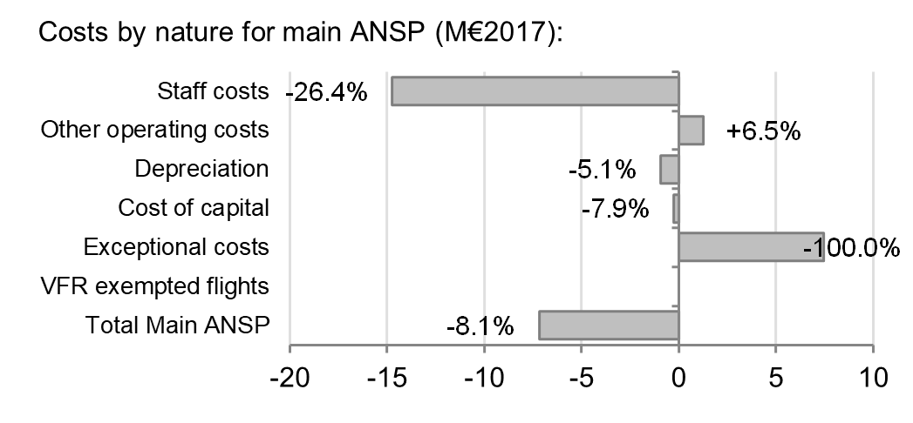
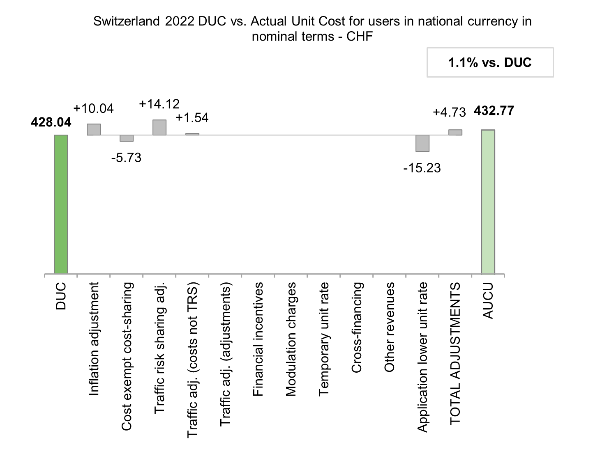
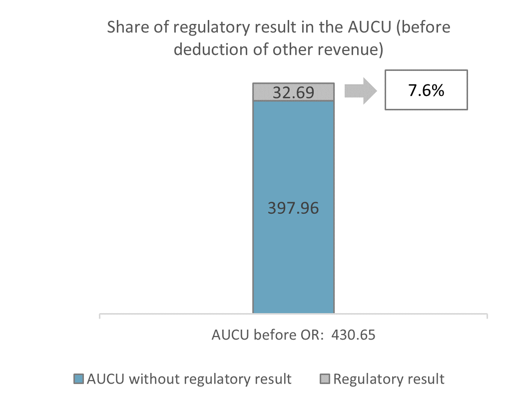

4.4 Terminal charging zone
Monitoring of the terminal determined unit cost (DUC) at charging zone level
The Determined Unit Cost (DUC) is the cost per service unit, at which the service is planned to be provided during the year. The Actual Unit Cost (AUC) reflects the cost per service unit, at which the service has actually been provided during the year.
The monitoring of the DUC / AUC is carried out in national currency in real terms, at 2017 prices.
Terminal actual unit cost (AUC) vs. terminal determined unit cost (DUC)
Focus on terminal DUC monitoring at charging zone level
AUC vs. DUC
In 2022, the terminal AUC was -2.1% (or -8.91 CHF2017, -8.02 €2017) lower than the planned DUC. This results from the combination of significantly lower than planned terminal costs in real terms (-8.6%, or -8.9 MCHF2017, -8.0 M€2017) and significantly lower than planned TNSUs (-6.6%). It should be noted that actual inflation index in 2022 was +2.9 p.p. higher than planned.
Terminal service units
The difference between actual and planned TNSUs (-6.6%) falls outside the ±2% dead band, but does not exceed the ±10% threshold foreseen in the traffic risk sharing mechanism. The resulting loss of terminal revenues is therefore shared between the ANSP and the airspace users, with the ANSP (Skyguide) bearing a loss of -2.9 M€2017.
Terminal costs by entity
Actual real terminal costs are -8.6% (-8.0 M€2017) lower than planned. This is the result of lower costs for the main ANSP, Skyguide (-8.1%, or -7.2 M€2017) and the MET service provider (-20.2%, or -0.9 M€2017).
Terminal costs for the main ANSP (Skyguide) at charging zone level
Actual terminal costs in real terms are lower than planned for Skyguide in 2022 (-8.1%, or -7.2 M€2017). However, the differences by nature of costs are distorted by the presentation of the additional costs caused by the change in the capitalisation rule in 2022 (+7.4 M€2017). Indeed, in order for these amounts not to be billed to airspace users, they have also been reported as negative exceptional items in the determined costs, but not in the actual costs (-100% of negative exceptional costs, or +7.4 M€2017).
- the significant difference in staff costs (which is overall of -14.7 M€2017 or -26.4%), can be mainly explained by the evolution of the FTEs and salary assumptions, but it is also due to a reimbursement from the pension fund, although partially offset by the provision for ATCO retirement age transition costs.


Monitoring of the terminal actual unit cost for users (AUCU) at charging zone level
The Actual Unit Cost for Users(AUCU) reflects the price per service units that is charged in fine to users for the services provided in the year. It corresponds to the sum of the DUC for the year and of the different adjustments stemming from that year. The monitoring of the AUCU is carried out in national currency in nominal terms.
Terminal actual unit cost for users (AUCU) at charging zone level

* The traffic adjustment on adjustments is not considered to avoid double counting, as the related adjustments have already been taken into account in full in the AUCU for the current year or previous years.
** The difference in revenue due to the application of the temporary unit rates in 2022, if applicable, is already reflected in the DUC (part to be charged retroactively) and is therefore not considered in the total adjustments, in order to avoid double counting.
Terminal costs exempt from cost sharing
Source: These data are taken from the June 2023 terminal Reporting Tables (for Eurocontrol costs and costs of competent authorities and qualified entities) and from the “NSA Report on the verification of cost risk sharing for the year 2022” submitted in accordance with Article 28 (7) of Regulation (EU) 2019/317 (for ANSPs costs).
Terminal regulatory result at charging zone level

*** before deduction of other revenues, as is the case for the regulatory results (see items 10 to 14)
Focus on terminal AUCU monitoring at charging zone level
The actual terminal unit cost incurred by airspace users (AUCU) in respect of activities performed in 2022 (432.77 CHF or 430.65 €) is +1.1% higher than the nominal DUC (428.04 CHF or 425.94 €). The difference between these two figures (+4.73 CHF/SU or +4.71 €/SU) is due to:
the positive inflation adjustment resulting from higher than planned inflation (+10.04 CHF/SU or +9.99 €/SU);
the impact of adjustments resulting from the costs exempted from cost-sharing mechanism (-5.73 CHF/SU or -5.70 €/SU);
the addition of the traffic risk sharing adjustments (+14.12 CHF/SU or +14.05 €/SU);
the addition of the traffic adjustment (+1.54 CHF/SU or +1.53 €/SU) for the costs not subject to traffic risk sharing; and
application of a lower unit rate as foreseen in Art. 29(6) in year 2022 (-15.23 CHF/SU or -15.16 €/SU).
The share of the regulatory result (see items 10 to 14) in the AUCU (before the deduction of other revenues) is 7.6%.